Microsoft Dynamics 365
Dynamics 365 is a portfolio of intelligent business applications that delivers superior operational efficiency and breakthrough customer experiences enabling businesses to become more agile and reduce complexity without increasing costs.
This section describes how to integrate the Dynamics 365 plugin into your store.
Please get the official integration with Dynamics 365 here.
What the Dynamics 365 plugin does
The Dynamics 365 plugin for nopCommerce allows the store owner to unidirectionally synchronise the following data between your nopCommerce store and Dynamics 365:
- Customers.
- Products.
- Orders.
Connecting to Microsoft Dataverse
To synchronize your store’s data to Dynamics 365, you need to connect to a Dataverse environment which requires the URL to the environment and credential information for a user account with access to that environment. To connect to Microsoft Dataverse, you can either use credentials for an ordinary user or create an app user through Microsoft Entra ID.
Using credentials for an ordinary user, isn’t the recommended approach as it would need a paid license.
To overcome this limitation, you can create a special application user that is bound to a Microsoft Entra ID registered application and use a key secret configured for the app. Another benefit of this approach is that it doesn't require a paid license.
When you create client applications that use Dataverse web services you need to authenticate to gain access to data. OAuth is the preferred means to authenticate because it provides access to all web services.
Note
Client applications must support using of OAuth to access data using the Web API. OAuth requires an identity provider for authentication. For Dataverse, the identity provider is Microsoft Entra ID.
Requirements to connect as an app
To connect as an app you will need:
- A registered app
- A Dataverse user bound to the registered app
- Connect using either the application secret
App Registration
When you connect using OAuth, you must first register an application in your Microsoft Entra ID tenant.
For an app to authenticate with Dataverse and gain access to business data, you must first register the app in Microsoft Entra ID. That app registration is then used during the authentication process.
Creating a client application facilitates authentication and authorization and you can grant access permissions accordingly.
Steps to Create an app
Registering your application establishes a trust relationship between your app and the Microsoft identity platform. The trust is unidirectional: your app trusts the Microsoft identity platform, and not the other way around. Once created, the application object cannot be moved between different tenants.
Sign in to the Microsoft Entra admin center
Browse to Identity > Applications > App registrations and select New registration.
Enter a display Name for your application.
Specify who can use the application - Accounts in any organizational directory
Don't enter anything for Redirect URI (optional). You'll configure a redirect URI in the next section.
Select Register to complete the initial app registration.
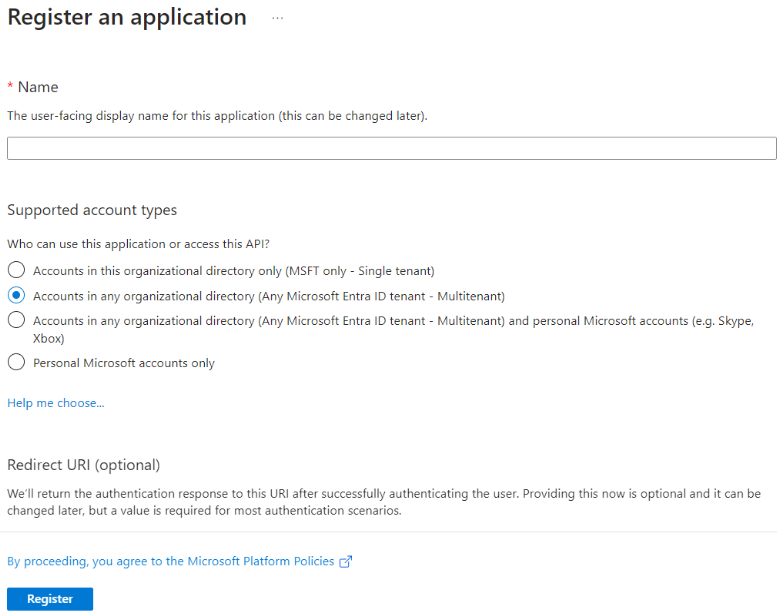
When registration finishes, the Microsoft Entra admin center displays the app registration's Overview pane. You see the Application (client) ID. Also called the client ID, this value uniquely identifies your application in the Microsoft identity platform.

Configure application
On the Overview page under Essentials, select the Add a Redirect URI link. Set the redirect URI by first selecting Add a platform, entering a URI value, and then selecting Configure. Use a URI value of
http://localhost.On the Overview page of your newly created app, hover the cursor over the Application (client) ID value, and select the copy to clipboard icon to copy the ID value. Record the value somewhere. You need to specify this value later.
Add credentials. Credentials allow your application to authenticate as itself, requiring no interaction from a user at runtime.
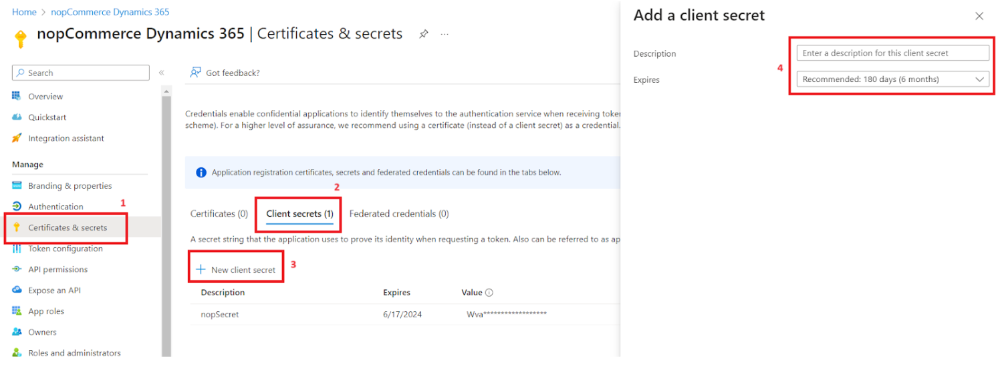
- In the Microsoft Entra admin center, in App registrations, select your application.
- Select Certificates & secrets > Client secrets > New client secret.
- Add a description for your client secret.
- Select an expiration for the secret or specify a custom lifetime.
- Client secret lifetime is limited to two years (24 months) or less. You can't specify a custom lifetime longer than 24 months.
- Microsoft recommends that you set an expiration value of less than 12 months.
- Select Add.
Note
Record the secret's value for use in your client application code. This secret value is never displayed again after you leave this page.
Then switch to Manage > Manifest where we can see many properties. Our concern here is allowPublicClient. Set allowPublicClient to true and save.

Lastly in Manage > API permissions > Add permission then search for Dynamics CRM and select user_impersonation and add it.

Also, grant admin consent for your organization since without admin consent the connection might raise errors.
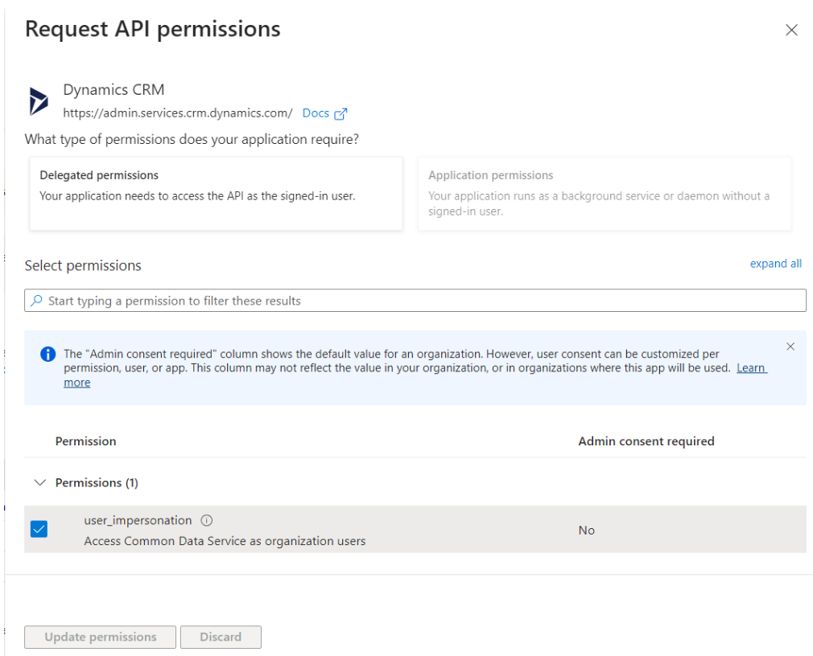
Create a new app user
Follow these steps to create an app user and bind it to your app registration.
Log into the Power Platform admin center using an account in the same tenant as your app registration.
Select Environments in the left navigation pane, and then select the target environment in the list to display the environment information.
Select the S2S link on the right side of the page.
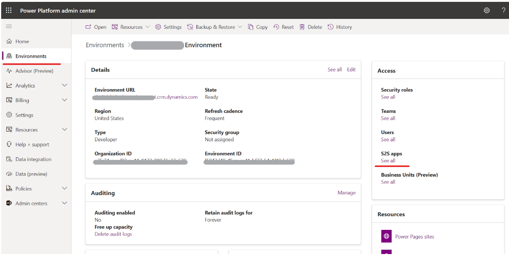
Select New app user.
On the Create a new app user slide-out, select + Add app.
Start typing the name of your app registration in the search field, and then select (check) it within the results list. Next, select Add.

Back on the Create a new app user slide-out, select the target Business unit from the drop-down and add a security role for the app user (also known as a service principle).
Select Save and then Create. You should see your new application user in the displayed list of application users.

In the end, a notification pops up confirming that Power Apps is linked with our client application successfully.
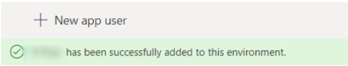
Dynamics 365 Sales and Business Central integration setup
The Microsoft Dynamics 365 plugin by nopCommerce supports synchronization with two main Dynamics 365 applications - Business Central and Sales. Dynamics 365 Business Central is a complete ERP solution for managing finances, operations, and inventory. Dynamics 365 Sales is a CRM solution that offers sales process automation, customer behavior insights, and sales performance tracking.

Connect Microsoft Dataverse with Dynamics365 Business Central
Integration with Business Central is through Dataverse, and there are many default settings and tables provided by the integration.
Choose Settings -> Advanced settings in Business Central.

Note
Choose Settings -> Assisted setup in Business Central.
You can also find the "Connect with other systems" settings group to learn more about integration options.

The integration with Business Central is through Dataverse, and there are many default settings and tables provided by the integration. Therefore, you must first configure the connection to Dataverse.
Warning
Do not try to connect to Dynamics 365 Sales first.
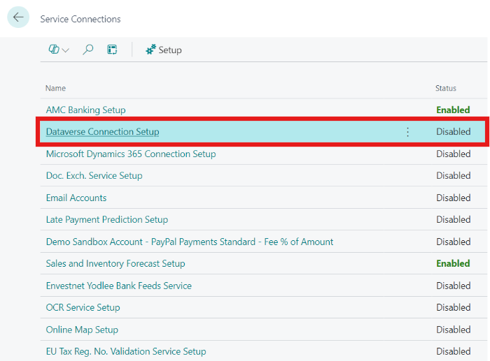
Choose Next.
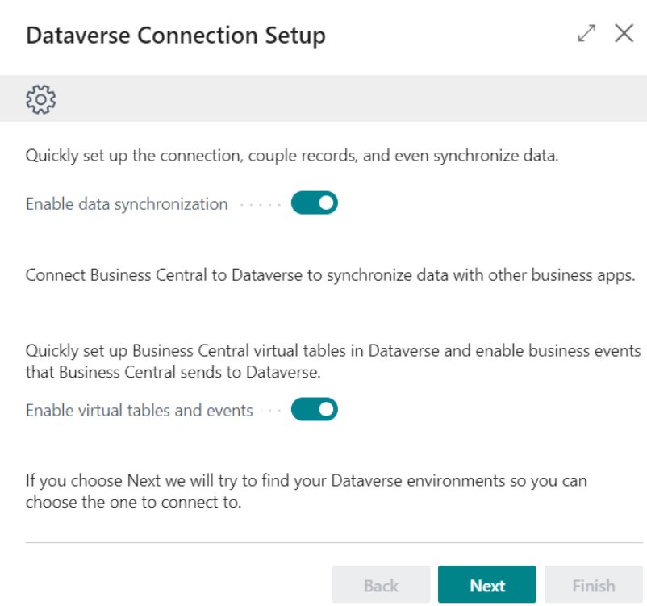
Click "Install Bussiness Central Virtual Table".

Select your Dynamics 365 environment URL, then choose OK.
Log in with an administrator user account and give permission to the application that will be used to connect to Dataverse.
Choose Sign in with administrator user.

You can check this link in the Power Platform Admin Center.
After Sign in with administrator user turns green and bold, choose Next.

Choose an ownership model. Team is recommended.

Choose Finish to complete the Setup.

You can try to test the connection to Dataverse. Go to the Dataverse Connection Setup page to check your setup.
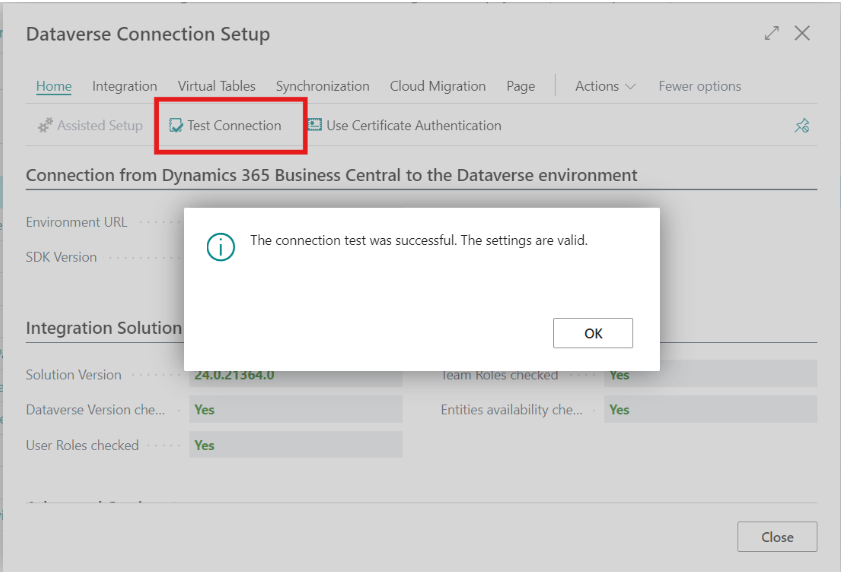
Now you can open Dataverse pages in Business Central.

Connection to Dynamics 365 Sales
Once the Dataverse integration setup is complete, you can begin the integration with Dynamics 365 Sales.
Choose Set up a connection to Dynamics 365 Sales on the Assisted Setup page.
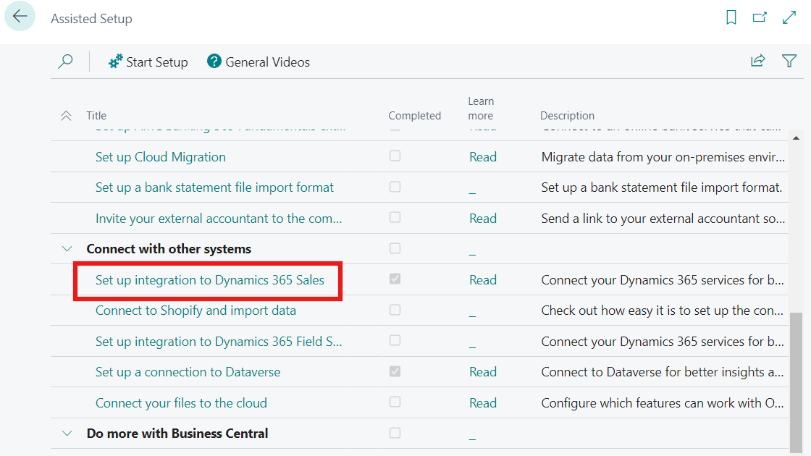
All integration setup steps are similar to the integration with Dataverse. You need to specify the same environment as last time.
As a result, if everything went without errors you will see that both your connections are configured and working correctly.
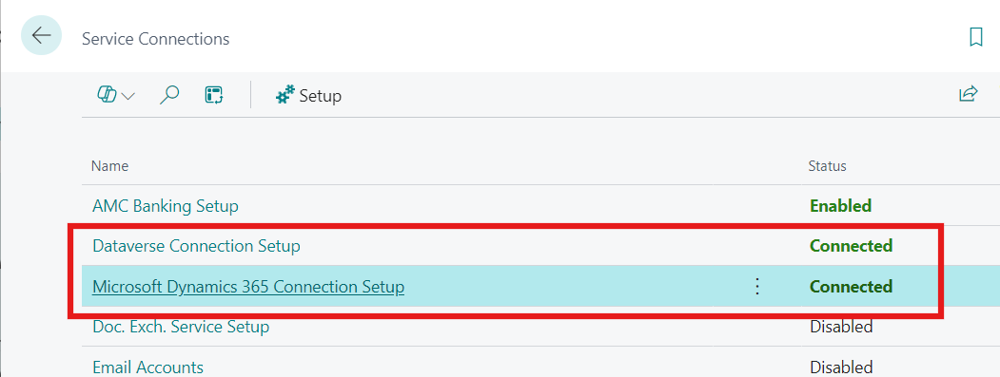
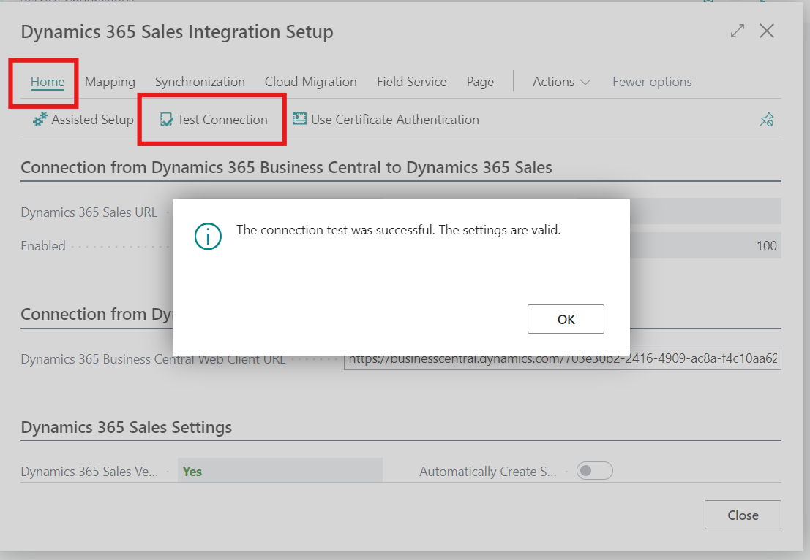
Now you can open Dynamics 365 Sales pages in Business Central.

For example, Products – Microsoft Dynamics 365 Sales:

For example, Sales Order – Microsoft Dynamics 365 Sales:

Note
To ensure that the integration process works correctly, make sure that the following lines are present in the settings on the "All Solutions" page:
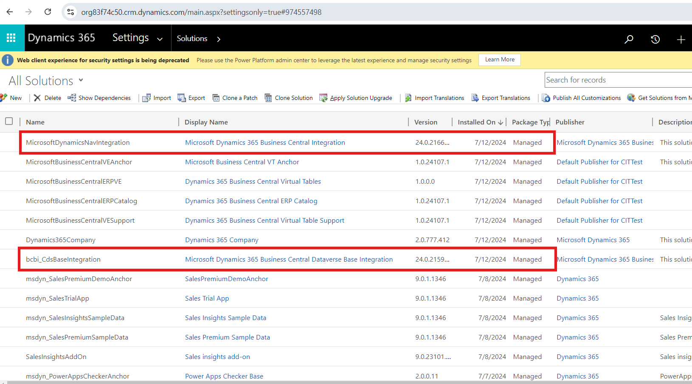
The Job Queue Entries will be created automatically:

Currency
Ensure that Business Central and Dataverse currencies match to avoid synchronization errors. Make sure of this by going to the following settings.
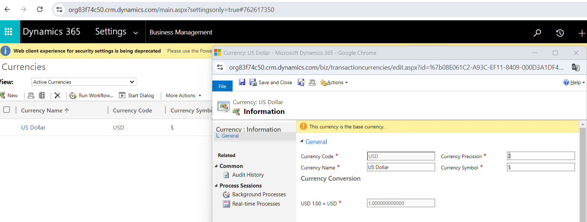
The organization’s base currency in Dynamics 365 Sales can only be set when the organization is created.

Plugin installation
This section describes how to integrate the Dynamics 365 service into your store.
- Purchase the integration here.
- Download the plugin archive.
- Go to Admin area > Configuration > Local plugins.
- Upload the plugin archive using the "Upload plugin or theme" button.
- Scroll down the list of plugins to find the newly uploaded plugin.
- Click on the Install button to install the plugin.

How to configure the plugin
Click the Configure button. You will see the Configure - Dynamics 365 window:
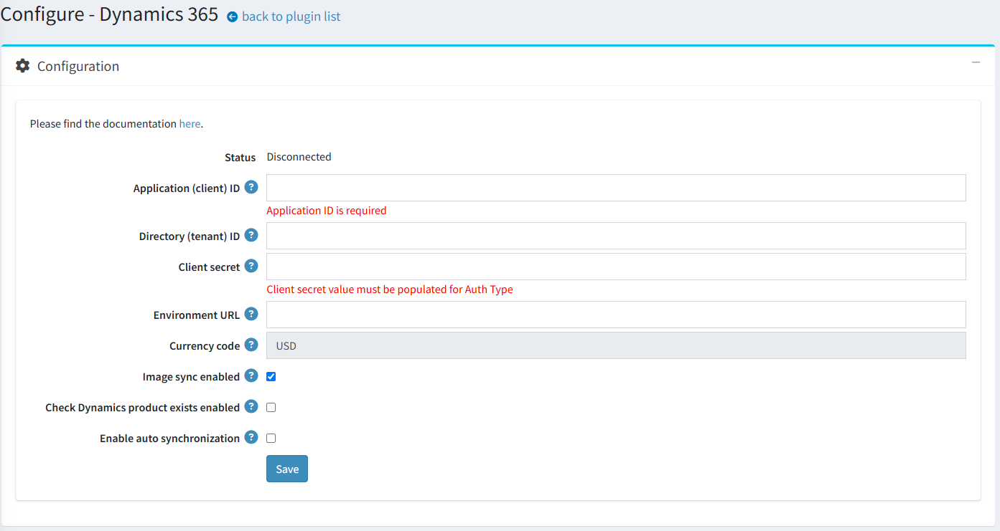
To use Dynamics 365 with nopCommerce, you will first need to register and set up your account in MS Dynamics 365 as described earlier and enter all the necessary settings in the fields on the plugin configuration form:
- Application (client) ID. The registered client ID on Azure portal.
- Directory (tenant) ID. The registered tenat ID on Azure portal.
- Client secret. Client secret for Application ID. A secret string that the application uses to prove its identity when requesting a token.
- Environment URL. Direct URL of Dataverse instance to connect too.
- Currency code. Displays the primary currency code of the your store.
Note
If you change the primary currency of the store, the plugin settings will be updated only after you save them.
- Image sync enabled. Determine whether to synchronize images of the selected products by default.
- Check Dynamics product exists enabled. When this setting is enabled, when synchronizing orders, the presence of records in Dataverse about the products included in the order will be checked. ATTENTION: this will significantly increase traffic and negatively affect performance.
- Enable auto synchronization. Determine whether to enable auto synchronization. If disabled, synchronization must be started manually on this page.
- Auto synchronization period. Set the period (in minutes) for auto synchronization.
Click the Save button.

Go to the Synchronization panel to synchronize your nopCommerce customers, products, and orders with your Dynamics 365 environment.
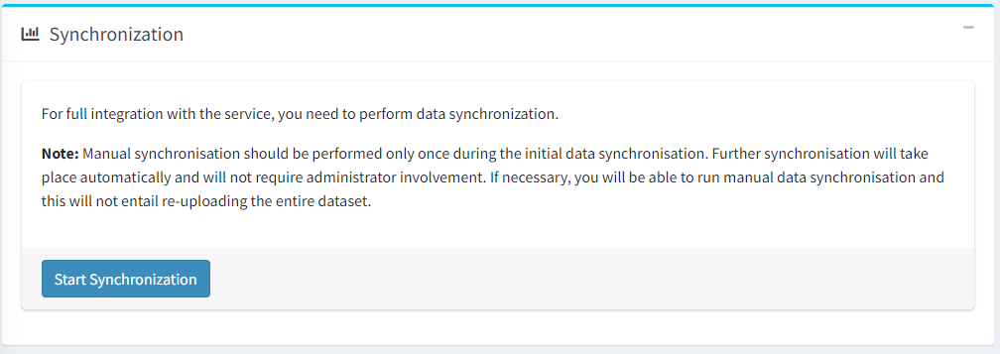
Contacts sync
The plugin implements the initial import of all existing contacts (customers). It is performed when the user has just installed the plugin and wants to import all existing store contacts into Dynamics 365. Then, adding and editing customers is performed automatically according to the corresponding event.

Products sync
The plugin implements the import of products. Synchronization of two types of products is supported:
- Simple products
- Group product

In the plugin track a number of events to notify the Dynamics 365 service:
- Create product.
- Changing a product (increasing the quantity, adding images, etc.).
Orders sync
In the plugin track a number of events to notify the Dynamics 365 service:
- Placing an order.
- Payment of an order.
- Canceling an order.
- Finalizing the order processing.
- Changing the order status.

Scenarios for changing order statuses to transfer them to Dynamics 365
The diagram below shows the relationship between order status changes in the nopCoomerce system and Dynamcs 365.
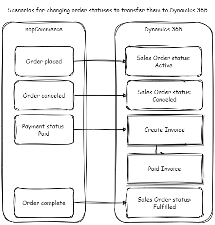
Note
There is a limitation on deleting orders with a Paid status; such paid orders cannot be deleted from the Dynamics 365 system.